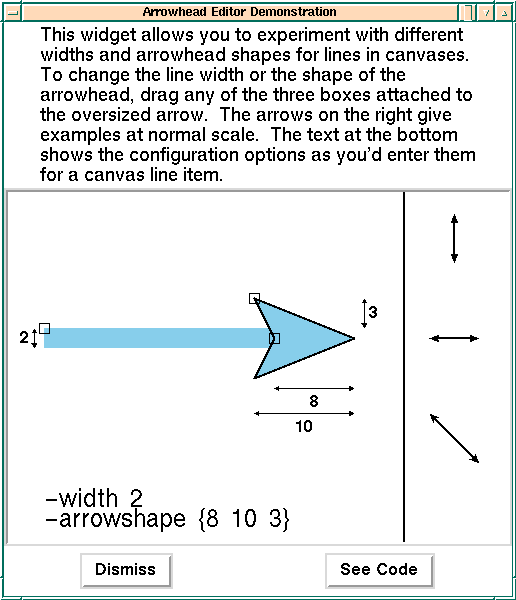
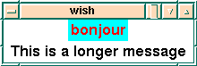

Rensselaer Polytechnic Institute
ECSE-4750 Computer Graphics, Fall 1999
Class 6, Thurs Feb 27
Convenience Functions:
- Another more elaborate example of convenience functions
is http://devcentral.iftech.com/learning/tutorials/misc/motif/9.asp
- This also shows contraints and uses convenience functions
supplied by Motif: xeditor.c
X Stuff
Here are hints about more X functionality.
Unused Command Line Args
This program, xuserargs.c, prints
any command-line args that XtVaAppInitialize doesn't recognize.
Try these:
xuserargs
xuserargs -bg red
xuserargs -hi -bg red -bye 3
Man X
This is the X man page.
It lists all the standard command-line args.
Events
There are 33 types of events, see man
XAnyEvent
Color Maps
X supports frame buffers with depths from 1 bit deep on up. It
also supports color maps, with the user having total control.
There are also several ways to specify colors; see man X.
Fonts
Fonts can be specified at runtime, like other resources.
Wildcards and alternate names are allowed. There can be
designated font servers.
Drawing Lines, Polygons, etc
The Xlib level of X does this. It's complicated. I used to
talk about it in class.
Debugging Hints
Meaning of Pointer -- Integer Warning
What causes this?
warning: assignment makes pointer from integer without a
cast
One common reason is that you didn't declare a routine that
returns a pointer. Then the routine type defaults to int. This
can happen if you copy some code from xbox to xtext
w/o also copying the affiliated include files. E.g., XmCreatePromptDialog
needs
#include <Xm/SelectioB.h>
See the man page or programmers guide.
Perror
Check the error code returned by open, read,
etc. If it's an error (possibly shown by -1), then in addition
possibly to printing your own error message, call perror
to print the reason for failing. See the man page.
Graphical debuggers
ddd and xxgdb are useful graphical debuggers
to see where the program crashed, run it again line by line, etc.
The following was posted to rpi.rcs by
wilmesj@sage3101-11.its.rpi.edu (Josh Wilmes) in November 97.
``The Data Display Debugger (DDD) is a novel graphical user
interface to GDB and DBX, the popular UNIX debuggers. Besides
``usual'' features such as viewing source texts and breakpoints,
DDD provides a *graphical data display*, where data structures
are displayed as graphs. A simple mouse click dereferences
pointers or reveals structure contents. Complex data structures
can be explored incrementally and interactively, using automatic
layout if preferred. Each time the program stops, the data
display reflects the current variable values. Using DDD, you can
reason about your application by viewing its data, not just by
viewing it execute lines of source code.
``DDD is available through the ACM Bin-Man service. For more
info on the service, see /dept/acm/Bin-Man.Service.''
I/O in C
There are two ways to do this: either with the routines open,
read, write, and close, or with the
routines fopen, fread, fwrite, and fclose.
I recommend the first set. Since you are reading files that are
much smaller than your memory, declare a large buffer and read
the whole file in one call. Calling getc in a loop is
crazy.
When using open to create a file, use the third
argument to give a mode such as 0600. Otherwise, open
might create the file nonwritable, and the next time that you run
your program, it won't be able to write it.
Here's a sample program, testopen.c.
Unix Man Usage
If there are both a command and a routine with the same name,
as for write, man will give you the command man
page. man -k write will list all the man pages with write
as part of the title line. man 2 write will list the
routine's man page, which is in volume 2.
More on Online Documentation
For example, here is how to find the chapter on color in the
online Xlib Programming Manual on the SGIs.
- Look at the menu that should be on your screen, which
looks like this.
- Click on Help, to cause a menu like this to
appear.
- Click on Online Books, to cause a window like
this.
- Double click on Xlib Programming Manual, to
cause a window like this.
- Scroll thru the Table of Contents in the upper window to
find Chapter 7 - Color.
- If you wish, click on + to expand the table of
contents.
- Double click on chapter 7 to display the text in the
lower window.
- Scroll thru it.
- Don't try to read every detail. You want only an
introduction and executive summary.
Homework 4 --- due Thurs Feb 10
The main part of this homework is to write a usable text
editor, which is surprisingly easy given the Motif widgets, which
have already done most of the work.
* Do not hand in anything for the starred questions.
- What is special about a cascade button? (Ref: the Motif
Programming Guide, chapter 6.)
- ``The windows associated with PopupMenus and
PulldownMenus are top-level windows. That is, the parent
window of such a menu is the root window of the screen,
not the window associated with the parent widget.'' What
advantage is there to this? (same ref.)
- Read chapter 1 of the Motif Progamming Guide,
which has an excellent capsule summary of X, and answer
these questions from it.
- Tell us the definition of a GUI.
- Tell us the definition of an API.
- What, fundamentally, is the X Window System?
- In one sentence, what is a display?
- What are the three most important contributions
of {Xt}?
- What is the main function of a shell widget?
- * Compile and play with xdrawing.c
- * Change the coordinates of the end points.
- * Draw more lines and Points.
- * Change the color of the GC.
- * Check out the events being sent to your application. Is
there enough to create a drawing program?
- Now that you understand xdrawing, your real homework is
to extend it to make an actual, usable, drawing app. Add
two buttons that represent the current drawing tool. One
is a line tool and the other is a point tool. When the
user presses the mouse button over the canvas your
application should draw according to the current tool and
color. If the line tool is active, you need to capture
the mouse down and mouse up events to get the beginning
and end of the line. If the point tool is active you can
simply capture the mouse down and simply draw a
point.Here are some hints:
- Lookup XtGetGC and XChangeGC for info on changing
the current color.
- Take a look at this code snippet for color
allocation: get_pixel.c
- Popup a dialog to ask for color as a string in
the form "r,g,b" and parse it
internally to get the pixel.
- Extra credit for people who create a better color
chooser. (one that works and is easy to use).
- Get a screendump showing your name in the title bar of
your app and some drawing. Hand it, and a code listing
in. (You don't need to hand in a color print out.
Tcl/tk --- Another Widget Set
There are other widget sets besides Motif. For example, Athena
is the demo widget set that comes with X. It's free with source
code, but is not as fancy. Here is another one, which I'll cover
as part of this course.
Tcl is an interpreted language designed by John
Ousterhout at UC Berkeley, with funding from ARPA. Its purpose is
to facilitate interactive programs. It is becoming very widely
used. It even runs from Netscape and Internet Explorer as a
plugin. According to the man page,
It is actually two things: a language and a library. First,
Tcl is a simple textual language, intended primarily for issuing
commands to interactive programs such as text editors, debuggers,
illustrators, and shells. It has a simple syntax and is also
programmable, so Tcl users can write command procedures to
provide more powerful com- mands than those in the built-in set.
Second, Tcl is a library package that can be embedded in
application programs.
Several packages are built on top, such as expect and
Tk. Expect is unrelated to this course, but is cool.
From its man page,
Expect is a program that ``talks'' to other interactive
programs according to a script. Following the script, expect
knows what can be expected from a program and what the correct
response should be. An interpreted language provides branching
and high-level control structures to direct the dialogue.
(Alternatively, the user may use the C language directly. See
libexpect(3).) In addition, the user can take control and
interact directly when desired, afterward returning control to
the script. Some applications are these:
- Cause your computer to dial you back, so that you can
login without paying for the call.
- Start a game (e.g., rogue) and if the optimal
configuration doesn't appear, restart it (again and
again) until it does, then hand over control to you.
Tk is an X11 toolkit that provides the Motif look and
feel and is implemented using the Tcl scripting language.
Programs are much shorter than similar C programs, tho they
execute more slowly. There are many demo programs in /campus/tcl/tk/4.2/common/lib/tk4.2/demos/.
To run them, you need /campus/tcl/tk/4.2/whatever/bin/
in your PATH, then just type the name of the program, such as hello,
the Tcl/Tk equivalent of our xgoodbye. This is its code.
#!/bin/sh
# the next line restarts using wish \
exec wish4.2 "$0" "$@"
# hello --
# Simple Tk script to create a button that prints "Hello, world".
# Click on the button to terminate the program.
#
# SCCS: @(#) hello 1.6 96/02/16 10:49:18
#
# The first line below creates the button, and the second line
# asks the packer to shrink-wrap the application's main window
# around the button.
button .hello -text "Hello, world" -command {
puts stdout "Hello, world"; destroy .
}
pack .hello
widget shows many examples, such as editing arrow
sizes:

and navigating around a floorplan for DEC's Westerm Research
Lab.
Here is a tiny line drawing program, stroker.tcl
from Sunlabs. ``Start drawing by pressing the left mouse button,
then draw a line by moving the mouse. When you release the left
mouse button, the line gets entered into the canvas. You can
delete a line by pressing the DEL key while the mouse is over a
line.'' Here is some sample output.
The code is just 32 lines.
Here is a Tcl/Tk intro for the SGIs. It may work similarly on
other platforms, depending the on Tcl version there.
- Type wish to start the interactive widget shell
to get this:
- Create a label widget: label .a -text Hi
- and realize it: pack .a
- Change its color: .a configure -fg red -bg cyan
- and its label: .a configure -text bonjour:

- Make another label: label .b -text { This is a longer
message }
- and realize it also: pack .b:

- Make a button with a callback and realize it:
button .err -text {I'm an error message.
Press me to remove.} \
-font -*-courier-bold-r-*-*-*-200-*-*-*-*-*-* \
-fg red -command {destroy .err}
pack .err
getting this.
- Click on it.
- Make a popup dialog with a menu:
tk_dialog .ddd title {Pick your favorite curriculum:} \
{} 1 EE CSYS CS MATH
and ensure your success in this course by picking the
right choice. Its number, counting from 0, is returned.
Do man dialog to see the args.
- Make an entry widget, which provides a line for you to
type input:
entry .ee -background green
pack .ee
- Type something in the green space, then delete a few
chars to show how you can edit the text, and get the
result thus:
.ee delete 2 4
.ee get
- Finally, make a procedure to open a pipe to get the
result of the date command and put that into a variable.
Then make a button whose text is always the current value
of that variable, and whose callback is that procedure.
proc getdate { } {
global date
set datef [open "|date"]
set date [read $datef]
close $datef
}
getdate
button .printdate -textvariable date -fg red -command getdate
pack .printdate
For more info, try here:
- Tcl/Tk Information
- Tcl Consortium
- Which is unfortunately shutting down.
- Scriptics Corporation
- Tcl Tutorial
- Tc/Tk
tutorial - A good start point and relatively complete
(although there are hundreds of tutorials)
- at rpi: /campus/tcl
I would choose Tcl rather than Motif for a large GUI.
Previous Class, Next Class, ECSE-4750 Fall 1999 Home Page
Copyright © 1998-9, Wm. Randolph Franklin. You
may use my material for non-profit education and research,
provided that you acknowledge me and preserve this notice.
Wm. Randolph Franklin, Associate Professor
For email address, replace NOSPAM by RPI in the following:
wrf@ecse.NOSPAM.edu
http://www.ecse.rpi.edu/Homepages/wrf/
+1 (518) 276-6077; Fax: -6261
ECSE Dept., 6026 JEC, Rensselaer Polytechnic Inst, Troy NY,
12180 USA
(PGP key available)